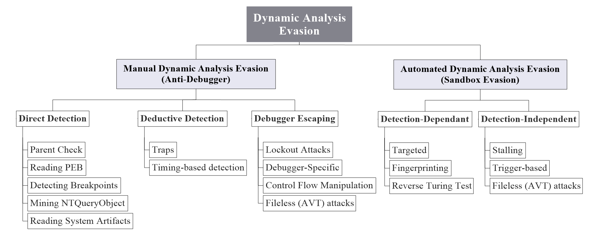

Malware Dynamic Analysis Evasion Techniques:
A Survey
Amir Afianian1, Salman Niksefat1, Babak Sadeghiyan1, and David
Baptiste2
1APA Research Center, Amirkabir University of Technology
2ESIEA (C + V)O lab
1{a.afianian, niksefat, basadegh}@aut.ac.ir
2baptiste.david@esiea.fr
June 2018
Abstract
The Cyber world is plagued with ever-evolving malware that readily
infiltrates all defense mechanisms, operates viciously unbeknownst to the
user and surreptitiously exfiltrate sensitive data. Understanding the in-
ner workings of such malware provides a leverage to effectively combat
them. This understanding, is pursued through dynamic analysis which
is conducted manually or automatically. Malware authors accordingly,
have devised and advanced evasion techniques to thwart or evade these
analyses. In this paper, we present a comprehensive survey on malware
dynamic analysis evasion techniques. In addition, we propose a detailed
classification of these techniques and further demonstrate how their effi-
cacy hold against different types of detection and analysis approach.
Our observations attest that evasive behavior is mostly interested in
detecting and evading sandboxes. The primary tactic of such malware we
argue, is fingerprinting followed by new trends for reverse Turing test tac-
tic which aims at detecting human interaction. Furthermore, we will posit
that the current defensive strategies beginning with reactive methods to
arXiv:1811.01190v1 [cs.CR] 3 Nov 2018
endeavors for more transparent analysis systems, are readily foiled by zero-
day fingerprinting techniques or other evasion tactics such as stalling. Ac-
cordingly, we would recommend pursuit of more generic defensive strate-
gies with emphasis on path exploration techniques that has the potential
to thwart all the evasive tactics.
1
Introduction
Gaining access through ARPANET network, Creeper copied itself remotely to
other computers, and, prompted the message: “Catch me if you can”. Emerged
1
as an experiment in 1971 [1], Creeper carried no harmful purpose, yet, with its
quick propagation it cast the light on a future with individuals or entities incor-
porating their malicious intentions into a software (hence the name malware),
that are capable of inducing undesired and harmful effects on the infected sys-
tems [2]. In those days, developing malware was merely about show off; but,
in today’s world, as the Internet has integrated every individual, institute, and
organization into a single cohesive complex, the goal of malware authors have
extended to include far more lucrative objectives, i.e. money, intelligence, and
power. Accordingly, these possibilities have profoundly motivated a new mal-
ware industry, the outcome of which, are highly sophisticated variants, which
aptly infiltrate systems and operate viciously unbeknownst to the user or defense
mechanisms.
Devising countermeasure or technologies that can withstand this level of so-
phistication would be possible merely by understanding the precise inner work-
ings of such malware. Malware analysis is the way to achieve this understanding
[3]. Initially, with the help of disassemblers, decompilers etc. analysts inspected
the malware’s binary and code to infer its functionality. This approach, which
is also referred to as static analysis became far more arduous, and intricate with
the advent, and evolution of code obfuscation tactics [4, 5, 6, 7, 8] and other
evasion tactics targeting static analysis e.g. opaque constants [9], packers [10],
etc. As a resolution, a promising approach that was adopted was dynamic anal-
ysis in which the basis of analysis and detection is what the file does (behavior)
rather than what the file is (binary and signature) [11]. Put differently, in dy-
namic analysis, an instance of the suspected program is run and its behavior
is inspected in run-time. This approach would obviate the hurdles posed by
aforementioned static analysis evasion tactics. To thwart these efforts, how-
ever, malware authors turned to a new category of evasion tactics that targeted
dynamic analysis.
In this paper, we identify two modes of dynamic analysis i.e. manual and
automated. Manual dynamic analysis is a more traditional form of dynamic
analysis and is often conducted with the help of debuggers. Automated dynamic
analysis is a more novel approach and also a response to the ever-increasing
new samples that security vendors face on a daily basis. Automated dynamic
analysis is often represented by the Sandbox technology. Further, we conduct a
comprehensive survey on evasion techniques that are tailored to each mode of
analysis.
In addition, we will portray the current and also the emerging evasive trends.
In the case of manual dynamic analysis evasion we posit that anti-debugging
techniques are still significantly being practiced. Also, we will discuss how the
new fileless malware is emerging and prevailing the traditional dynamic analysis.
Moreover, in the case of automated dynamic analysis, we divide evasion tactics
in two broad categories: detection-dependent, and detection-independent. We
argue that until recent times, sandbox technology have been focusing on tech-
nologies that chiefly target the detection-depend evasion tactics. As a response,
malware authors are gradually adopting more and more detection-independent
tactics to evade such automated dynamic analysis environments.
2
Our goal in this paper is threefold. First, given the importance of the sub-
ject, we have aimed at offering a comprehensive classification, with the hope
of moving towards an established taxonomy. Second, we aspired to unveil the
direction toward which the evasive behavior is trending. Thus, we tried to yield
a view of the current situation for pervasiveness of each evasion tactic. Our
third goal is to identify the shortcomings of the current defensive strategies and
offer a direction which we deem to have more potential on effectively confront
evasive malware.
Our contributions are:
• We present a comprehensive survey of malware dynamic analysis evasion
techniques for both modes of manual and automated. There have been
several surveys on malware analysis evasion such as [12] which has merely
focused on automated dynamic analysis evasion and covers only one (out
of five that we have identified) evasion tactic. Other surveys like [13, 14]
trivially surveyed analysis evasion and provide no detailed overview of
malware dynamic analysis evasion.
• For both manual and automated modes, we present a detailed classification
of malware evasion tactics and techniques. To the best of our knowledge,
this would be the first comprehensive survey of dynamic analysis evasion
tactics that offers a thorough classification.
• We portray the current trends in the realm automated dynamic analysis
evasion techniques and discuss about the proper course of action for the
future directions.
1.1
Overview
1.1.1
Scope
Latest reports attest to the dominance of Windows malware by a staggering
ratio of 77.22% in 2017 [15]. Statistics also show that due to the employment
of evasion techniques, “64% of AV scanners fail to identify 1% of the malware
after 1 year” [16]. These figures have further motivated us to converge our
focus on evasive malware targeting Windows OS. Moreover, in our research, we
have strove to probe the intersection of academia and industry. Thus, we have
reviewed both academic papers, and related industry-provided literature.
1.1.2
Approach
Our primary endeavor has been to provide a detailed and vivid overview of dy-
namic analysis evasion techniques. To this end, we have classified the results
of our scrutiny in three levels: category, tactic, and technique. Each category
represents a particular approach and a goal which is both shared and pursued
through different tactics. Each tactic then, is implemented via different tech-
niques. Throughout the survey we elaborate the details down to the tactic level
3

and we discuss several representative techniques. At the end of each section we
provide a summarizing table.
1.1.3
Evaluation
To fulfill the goals of this survey, we have employed several criteria such as
efficacy and pervasiveness of different techniques which serve as the basis of
comparisons for the related topic. In our summarizing tables we present data
from reviewed works where statistics are available, and otherwise we offer eval-
uations based on our own observation.
1.1.4
Organization
In section II, We discuss manual dynamic analysis (debugging) and correspond-
ing anti-debugging tactics. In section III we discuss automated dynamic analysis
and the corresponding evasion tactics. section II and III are followed by a dis-
cussion. Finally, section IV concludes the paper. Figure 1 demonstrates our
proposed classification of the malware dynamic analysis evasion tactics.
Figure 1: A classification of malware dynamic analysis evasion tactics
2
Preliminaries
2.1
Evasion and Transparency
In literature, evasion constitutes a series of techniques employed by malware in
order to remain stealth, avoid detection, or hinder efforts for analysis. A major
evasion tactic as we will discuss, is fingerprinting [17]. With fingerprinting,
malware tries to detect its environment and verify if it is residing in a production
system or an analysis system.
4
In the same level, one major strategy is to hide the cues and clues that might
expose the analysis system. A system is more transparent if it exposes fewer
clues to malware [18].
2.2
Manual vs Automated
Manual and automated analysis are two major terms which form the basis of our
classifications. The manual analysis is when the analysis process is performed
by an expert human. Automated, on the other hand, is the process that is
performed automatically by a machine or software.
2.3
Detection vs Analysis
Previously, there was no need for defining these two terms. Detection would
simply refer to the process of discerning if a given file is malicious or not; anal-
ysis, on the other hand, would refer to the process of understanding how the
given malware work. Today, however, this dividing line is blurry. The reason
is that the role of automated analysis tools such as sandboxes is now extended.
In addition to reporting on malware behavior, sandboxes are now playing their
role as the core of automated detection mechanisms [18]. In this paper, we
follow the similar concepts when uttering ”analysis”. For ”manual” it would
mean understanding the malware behavior [19], for the automated, additionally
it can mean detection.
2.4
Static vs Dynamic
There are two major types of analysis i.e. static, and dynamic. Static analysis
is the process of analyzing the code or binary without executing it. Dynamic
analysis is the process of studying the behavior of the malware (API, system
calls, etc.) at run-time. Both types of the analysis can be performed either
manually or automatically. In this paper, our focus is on dynamic analysis and
how malware tries to prevent or evade such analyses.
2.5
Category, Tactic, and Technique
Throughout this paper, we use the terms ”category”, ”tactic”, and ”technique”
that are the basis of our classification. Category of evasion is our high-level
classification. Each category has the goal of evasion with a specific attitude for
achieving it. This attitude is highly correlated with the efficacy of the evasion
and is pursued by the tactics under each category. Tactics, in other words, are
the specific maneuvers or approach for evasion with the specified attitude of its
parent category. Finally, techniques are the various practical implementation of
those tactics.
5
3
Manual Dynamic Analysis Evasion
As cited in the introduction, due to the employment of code obfuscation, pack-
ers, etc. static analysis of malware has become a daunting task. To obviate the
conundrums and limitations of this approach, analysts opt for dynamic anal-
ysis in which malware’s behavior is inspected in run-time and often with the
help of debuggers. This way of examination has two major benefits; one is that
it relieves us from the impediments inflicted by packers, polymorphism, etc.
Second, taking this approach enables us to explore the activities that manifest
themselves only in runtime [20] such as the interaction of the program with
the OS [11]. We view this approach which is aided by debuggers, under the
term “manual dynamic analysis”. The corresponding evasion tactics to this ap-
proach involves the set of employed techniques within malware code with the
goal of hindering, impeding or evading the analysis process. These measures
include approaches such as detecting the presence of analysis tools on the sys-
tem (e.g. wireshark, tcpdump, etc.) or detecting virtual-machines as a sign of
analysis environment, but, the majority of manual analysis evasion techniques
are targeted toward debuggers which are the primary tools of manual dynamic
analysis. Hence, in the domain of manual dynamic analysis evasion, we converge
our focus on anti-debugging tactics.
Simply, anti-debugging is the application of one or more techniques, to fend
off, impede or evade the process of manual dynamic analysis (debugging) or
reverse-engineering. It is noteworthy to mention that anti-debugging techniques,
similar to obfuscation, are legitimate practices conducted by developers to pro-
tect their software. This implies that anti-debugging has a long history which is
followed by a wide and diverse set of techniques. In this section, we will present
our survey on the most cited manual dynamic analysis evasion (anti-debugging)
tactics and corresponding techniques [11, 20, 21, 22, 23, 24, 25, 19, 26, 27, 28]
that are more relevant to the context of malware. In addition, for each tech-
nique, we employ 4 criteria to better yield an overview of relative weight and
efficacy. We summarize our anti-debugging study in table 1. Three criteria for
our comparison and our touchstone for evaluating them are as follows:
• Complexity: The difficulty of incorporating and implementing the tech-
nique within malware code. We associate low complexity if the technique
involves simple API calls for detection of debuggers’ presence, medium to
those that require several calls to inquire information from the system as
well and the need to deduce from the returned information the probability
of debuggers presence, and high to those that are challenging to implement
and require more than 30 lines of assembly code.
• Resistance: Resistance pertains to the difficulty level of counteracting
the evasion technique. If it would be as simple as altering some system
information (e.g. randomizing registry key or a bit in PEB ) we consider
it low; if defeating the anti-debugging technique requires user-level hook
and dll injection we assign medium resistance; if kernel-level manipula-
6
tions e.g. drivers is needed we set the resistance level as high; and if
the countermeasure requires operations below OS (virtualization, emula-
tion, etc.) we consider it very-high. Finally, we have N/A, associated to
techniques for which there exist no countermeasures yet.
• Pervasiveness: Due to the extreme diversity of malware sample dataset
it is hard to establish a ground truth for the pervasiveness of each tactic.
However, we strive to provide a fair view of this metric based on other
works [21, 29] in addition to our own observations and experience in the
field.
Additionally, we allot a column to textbfCountermeasure under Which we briefly
note how the anti-debugging technique could be circumvented.
Before scrutinizing the anti-debugging techniques, we will have a brief in-
troduction on debuggers, their goals, types, and techniques. Building upon this
understanding, we can better understand and elaborate anti-debugging tactics
and what makes them feasible.
3.1
A Briefing on Debuggers
As Sikorski states, “A debugger is a piece of software or hardware used to test
or examine the execution of another program [19]”. Among the core function-
ality of debuggers [30], there are several features that are critical to malware
analysis such as stepping through the code one instruction at a time, pausing
or halting it on desired points, examining the variables, etc. To provide each
of the mentioned functionality, debuggers rely on different tactics and each tac-
tic is often aided with specific hardware or software provisions that inevitably
result in subtle changes on the system. For instance, to provide the pausing
capability, one of debuggers’ tactics is to set breakpoints. Using breakpoints is
further assisted with either special hardware [31] (e.g. DR Registers of CPU and
specific API to access/alter them), or software (e.g. specific opcodes, etc.) [32]
mechanisms. Single stepping, as another instance, is made possible by trigger-
ing exceptions in the code which is aided by a specific flag (trap flag). One way
a malware can discover the presence of the debugger is through the very same
aiding mechanisms or results of corresponding changes on the system which we
will elaborate more as we proceed.
Based on the needed functionality, debuggers are implemented following dif-
ferent approaches [33], including user-mode debuggers e.g. OllyICE, OllyDbg,
kernel debuggers e.g. WinDbg, KD, and simulator-based debuggers e.g. Ether
[34], BOCHS [35]. Each of the designs, yield different levels of transparency.
Kernel-level debuggers are more transparent than User-level debugger and pro-
vide more detailed information as they operate in ring 0 (same level of privilege
as the OS). Simulator-based debuggers have an even higher level of privilege
than kernel debuggers since the OS in this setting is running atop the simulated
(virtualized/emulated) hardware [34, 35] and consequently are more transpar-
ent to malware. In the next section, we proceed to manual dynamic analysis
evasion, or more specifically, anti-debugging tactics.
7
3.2
Proposed Anti-Debugging Classification
We propose three major categories, as malware’s initial anti-debugging strate-
gies: direct detection, deductive detection, and debugger evasion. As stated
earlier, we elaborate on each category down to the tactic level along with a
couple of representative techniques for each tactic. Finally, we summarize the
results of our scrutiny in table 1.
3.2.1
Direct Detection
We call the tactics of this category as “direct detection” in that, the malware,
simply through direct observation of debugger’s byproducts, and artifacts. can
spot its presence. One of the malware’s major leverages against debuggers stems
from the fact that debuggers were originally devised to debug legitimate software
[20]. Thus, initially, there has been no stealthy countermeasure provisioned by
them. Moreover, when we want to enable debugging capability, we have to
instrument the system with necessary tools which obviously results in a wide
spectrum of traces in different levels of the system [23, 29]. Examining the
system for such traces that are inherent to working principles of debuggers, is
one major strategy that malware utilizes to detect the presence of a debugger.
In this section, we will elaborate on these system changes and how malware
might try to disclose them. This category of tactics are often easy to employ
and also easy to defeat. Moving from user-mode debuggers to simulation-based
ones, this category of evasion pales in efficacy.
3.2.1.1
Reading PEB
Process Environment Block (PEB ) is a data struc-
ture that exists per process in the system and contains data about that process
[36]. Different sections of PEB contain information that can be probed by a
malware to detect whether a debugger exists. The most obvious one is a field
inside PEB named BeingDebugged which can be read directly or as Microsoft
recommends— and malware like Kronos [37] or Satan RaaS [38] implement
— through the specific APIs that read this field, i.e.
IsDebuggerPresent(),
CheckRemoteDebuggerPresent(). Implementation of this technique is of triv-
ial complexity which can be countered through alteration of BeingDebugged
bit [39] or API hook [22]. Other techniques based upon PEB involve utiliza-
tion of NtGlobalFLags and ProcessHeap which are slightly more complex [25].
Collectively, anti-debugging tactics relying on PEB, constitute the majority of
anti-debugging techniques observed in malware [21].
3.2.1.2
Search for Breakpoints
To halt the execution, debuggers set break-
points. This can be accomplished through hardware or software techniques. In
hardware breakpoints, the breakpoint address, for instance, can be saved in
CPU DR registers or. In software breakpoints, the debugger would write the
special opcode 0xCC (INT 3 instruction) into the process which is specifically
designated for setting breakpoints. Consequently, the malware, if spots signs
8
of these breakpoints, presumes the presence of a debugger. This can be ac-
complished through a self-scan or integrity check, looking for 0xCC, or using
GetThreadContext to check CPU register [25]. The latter technique has been
employed by malware such as CIH [40] or MyDoom.
This tactic is the second most observed anti-debugging technique in mal-
ware’s arsenal [21] and is simple to implement (less than 10 lines of assembly
code often suffices). Countering this category of tactics, however, is not trivial.
In the case of software breakpoints, for instance, the debugger has to keep and
feed a copy of the original byte that was replaced by 0xCC opcode [39].
3.2.1.3
System Artifacts
From installation to configuration and execu-
tion, debuggers leave traces behind in different levels of the OS, e.g. in the file
system, registry, process name, etc. Hence, a malware can simply look for these
traces. FindWindow(), FindProcess() are a couple of APIs that shcndhss [41]
exploited to detect debuggers. The malware, for instance can give the name of
debuggers as the parameter to FindWindow() to verify if its process exists on
the system or not [26, 42]. Most often, simple anti-debugging techniques are
trivially defeated. The countermeasure to this category of tactic is randomizing
the names, or altering the results of the aforementioned query through simple
API hooks. Even though attributed to one of the anti-debugging techniques in
literature, we have rarely observed it in the wild.
3.2.1.4
Parent Check
Ordinarily, applications are executed either through
double clicking of an icon, or execution from command line, the parent process
ID of which is retrievable accordingly. It would be a pronounced sign of de-
bugger if the examined parent process name belongs to a debugger or is not
equivalent to process name of explorer.exe [25]. One straight forward technique
is using CreateToolhelp32Snapshot() and checking if the parent process name
matches the name of a known debugger [22]. A randomization of debuggers’
process name suffices to defeat this technique. Another more complex way is
to check the parent process ID against that of explorer.exe. A malware such
as [41] utilizes of the following functions: GetCurrentProcessId(), CreateTool-
help32Snapshot(), Process32First() Process32Next() [21]. If the parent process
ID does not match with that of the explorer.exe, it might be a sign of debuggers
presence. Precise and effective employment of this technique faces some chal-
lenges. If there are more than one process for explorer.exe, then, there would
be more than one PID for it. This would complicate the process by sparking
false positives in that the parent PID might match to one explorer.exe PID and
not the other. Countering this tactic would be skipping the relevant APIs [29].
Our observations demonstrates few utilization of this tactic [21].
3.2.1.5
Mining NtQuerySystemInformation
The ntdll NtQuerySystem-
Information() is a function that accepts a parameter which is the class of infor-
mation to query [25]. Most of these classes are not documented. There are many
ways malware might pursue to leverage this function with the goal of spotting
9
debugger’s signs. Debugger is easily exposed, for instance, if the malware passes
the SystemKernelDebuggerInformation() (0x23) class as the parameter to this
function, the returned values are two flags; one of them is KdDebuggerNotPre-
sent(), if the value equals zero, it attests debuggers presence. Employment of
this tactic is not simple (more than 40 lines of assembly code [25]), and nor is
circumventing it. The reason is that when this function is invoked, the returned
values are coming from the kernel. Defeating anti-debugging techniques follow-
ing this tactic requires patching the kernel. vti-rescan [43], Wdf01000.sys [44],
and Inkasso trojaner [45] are some instances that leverage this tactic.
As stated earlier, deployment of direct detection tactics is relatively straight-
forward and trivial which in turn are often just as trivial to defeat. more subtle
way of detecting and evading debuggers is through deductive detection which is
the subject of the next section
3.2.2
Deductive Detection
Tactics under this category fulfill the goal of inferring debuggers presence, rather
than directly observing it. Tactics of this category calculate and assess the
probability of debugger’s presence. These inferences mostly rely on exploiting
the logic of the system (e.g. SEH Exception handling [46]). More specifically,
as a way of illustration, the way Windows handles exceptions can be abused by
malware to illicit debugger presence). Malware may employ different ingenious
tactics to this end which we explore in the following.
3.2.2.1
Traps
Not to be mistaken with the trap flags, we define this cate-
gory of tactics as “traps”. Following this tactic, the malware provisions codes
that when traversed or stepped through by debugger, production of specific
information or lack thereof, would help the malware deduce the presence of a
debugger. Many techniques fit this category and we elaborate a couple of them
here and hint at the rest in table 1.
One technique by which malware beguile debuggers to disclose cues of its
presence is using specific instructions and exploiting the logic of how these in-
structions are handled. The handling is performed through Structured Excep-
tion Handling SEH (You can refer to[46] for more information about SEH ). For
instance, Max++ malware [47] embeds “int 2dh” instruction within its code.
According to SEH, when this instruction is executed, in normal situation i.e.
absence of debugger, an exception is raised and malware can handle it via a
try-catch structure. However, if a debugger is attached, this exception will be
transferred to the debugger rather than the malware; the absence of expected
exception is the logic that the malware entertains to deduce the presence of
a debugger. Malware may employ other techniques to lay their traps such as
embedding specific instruction prefixes [26], or other instructions such as 41h
[25]. These techniques are of low complexity and can be implemented with less
than 20 lines of code (in assembly). One way of countering these traps requires
debuggers to skip these instructions. According to our survey, utilizing traps is
a fairly common approach [21].
10
3.2.2.2
Timing-Based Detection
Timing-based detection are among the
most efficacious tactics of inferring debugger’s presence. Adroit employment of
this tactic reliably exposes the presence of a debugger and circumventing them
is an arduous task.
The logic behind this tactic follows malware authors’ presumption that a
particular function or instruction set, require merely a minuscule amount of
time. Thus, if a predefined threshold is surpassed, malware would infer the
presence of a debugger. Timing-based detection can be carried out either locally
with the aid of local APIs(GetTickCount(), QueryPerformanceCounter(), etc.
[48]) or CPU rdtsc (read time stamp counter) or can be performed by inquiring
an external resource through the network [49] to conduct the timing. Local
timing is simple to employ and difficult to circumvent. Countering timing-based
detection conducted with the aid of external resource (using NTP or tunneled
NTP), however, is still an open problem [28]. W32/HIV [50], W32/MyDoom
[51], W32/Ratos [52] are infamous malware that are known to have exploited
the timing discrepancies.
3.2.3
Debugger Escaping
Unlike previous categories the goal of which, were detecting or inferring de-
bugger’s presence, the goal of this category is assuring that the execution of
malware wholly or partially takes place. Malware adopt catching approaches to
fulfill the goal of this strategy. We will have a survey on tactics of this category
in the following.
3.2.3.1
Control Flow Manipulation
Through this tactic, malware ex-
ploit the implicit flow control mechanism conducted by Windows OS. To im-
plement these techniques, malware authors often rely on callbacks, enumeration
functions, thread local storage (TLS ), etc. [25, 29]. There are several notewor-
thy techniques that fulfill the goals of “debugger Escaping” and each deserves
a brief introduction.
• Thread-hiding:A simple and effective technique is thread-hiding which
if used, prevents debugging events from reaching debugger.
Microsoft
has provisioned special API [53, 54].
This technique uses NtSetInfor-
mationThread() function to set the field HideThreadFromDebugger() of
ETHREAD kernel structure [27]. This is a powerful technique and simple
to implement and can be countered by hooking the involving functions.
LockScreen [54] is an instance known to have utilized this technique.
• Suspending Threads: A more aggressive way malware might step into is
striving to halt the process of the debugger to continue its own execution
with little trouble.
This technique can be effective against only user-
mode debuggers and can be carried out by leveraging SuspendThread() or
NtSuspendThread() from ntdll [21]. Suspending threads is one of the anti-
debugging techniques that Kronos banking malware used in its arsenal
[37].
11
• Multi-threading: Another technique to bypass debuggers and continue
the execution is multi-threading. One way to implement it through Cre-
ateThread() API. Malware that is packed, often spawns a separate thread
within their process to perform the decryption routines [27]. However,
there are instances where malware executes a part of its malicious code
through a different thread outside the debugger. McRat [55] and Ver-
texnet [56] have incorporated such technique. Countering this technique
is tricky. One way is to set breakpoints at every entry point [57, 58].
• Self-debugging: Self-debugging is an interesting technique which prevents
the debugger from successfully attaching to the malware [59]. By default,
each process can be attached to merely one debugger. Malware exploits
this by running a copy of itself and attaches to it as a debugger. Hence
preventing another debugger to own it. There are several ways to imple-
ment this tactic, for instance by leveraging DbgUiDebugActiveProcess() or
NtDebugActiveProcess().
Collectively, debugger escaping techniques are not much common among the
samples we have observed.
3.2.3.2
Lockout evasion
In Lockout tactic, malware accomplishes the goal
of continuing its execution by impeding with the working of the debugger. Mal-
ware achieve this through several techniques. One is to opt for BlockInput()
function as in the case of Satan RaaS [38], through which malware prevents
mouse and keyboard inputs until its conditions are satisfied. Other techniques
involve exploiting a feature in Windows NT-based platforms that allow for the
existence of multiple desktops. Malware, such as LockScreen, [54] with the help
of CreateDesktop() followed by SwitchDesktop() can select a different active
desktop and continue its working unbeknownst to the debugger [58].
3.2.3.3
Debugger Specific
Debugger specific evasion exploit vulnerabili-
ties that are exclusive to a specific debugger. These vulnerabilities are difficult
to discover, but simple to put into action. A famous instance pertains to Olly-
DBG [27]. Regular versions of this debugger have a format string bug which can
be exploited to cause it to crash by passing an improper parameter to OutPut-
DebugString() function. Another pervasive-at-the-time technique was related
to SoftICE debugger which was susceptible to multiple DoS attacks due to two
vulnerable function [58]. Malware like [60] exploited these vulnerabilities would
cause the ”bluescreen of death. SoftICE is no longer supported and the dll
file that caused the vulnerability in OllyDBG is now fixed. But the idea still
remains, if a vulnerability within a specific debugger is discovered, exploiting it
would be a potent anti-debugging technique. Table 1 summarizes the results of
our study.
3.2.3.4
Fileless malware
Fileless malware, non-malware and occasionally
called Advanced Volatile Attack (AVT) attacks, are the latest trend in the
12
evolution of malware. [61]. In contrast to all prior existence of malware, fileless
malware requires no file to operate and they purely reside in memory and take
advantage of existing system tools e.g. powershell [62].
The purpose of such attacks is to make the forensics much harder. To analyze
a malware is to analyze its executable; and in fileless malware, there is no
executable to begin with. In some cases such as SamSam [63] the only way to
just retrieve a sample for analysis would be to catch the attack taking place live.
These attacks inherently are not easy to conduct, but, with the help of exploit-
kits are more readily available. A 2018 report by McAfee shows a 432% increase
of fileless malware in 2017 [64] and projected to constitute 35% of attacks in
2018 [65].
With the aid of debuggers, the analyst can overcome many hurdles and lim-
itations of static analysis in the manual dynamic analysis. However, new trends
and real world scenarios in which the vendors face thousands of new malware
samples daily demands a more agile approach which is beyond the capabilities
of manual dynamic analysis. In the next section, we discuss the emergence of
automated dynamic analysis approach and Sandboxes as a response to these
challenges and elaborate malware’s tactics to thwart them. Table 1 summarizes
our survey of manual dynamic evasion techniques.
3.3
A Discussion
In table 1 we summarize our survey on malware manual dynamic analysis eva-
sion. In this table, we compare the techniques based on three criteria i.e. com-
plexity of implementation, resistance against manual dynamic analysis, and
pervasiveness. In addition, in the example column we provide malware samples
that incorporate the corresponding techniques.
Manual dynamic analysis evasion, or anti-debugging is as old as the existence
of software. What we have observed in the last decade, attest that incorporation
of anti-debugging is prevalent and has been steadily increasing. Authors in [66]
demonstrate that on average, more than 70 of malware samples utilize anti-
debugging techniques. The majority of these techniques are the ones we have
covered in this section.
In addition, we have noticed that besides the very
pervasive techniques such as IsDebuggerPresent, malware are also employing
more timing-based techniques.
Another emerging trend in malware industry, is fileless malware. Such mal-
ware as in the case of Rozena [67] leverages exploits to execute malicious com-
mands right from the memory. Given the difficulties of acquiring samples in
post-infection phase and the fact that they reside merely in memory, perhaps
we can conclude that fileless or AVT attack is the most effective manual dynamic
analysis evasion tactic.
13
Table 1: Classification and comparison of malware anti-debugging techniques
Criteria
Countermeasure
Malware
Complexity Resistance
Pervasiveness
Tactic
Sample
Cat.
Tactic
Technique
IsDebuggerPresent()
Set the Beingdebugged flag to
Low
Low
CheckRemoteDebuggerPresent()
zero
Set heap_groawable glag for
Very
Reading
ProcessHeap()
Medium
Low
[35, 36]
flags field and forceflags to 0
high
PEB
Attach debugger after process
NtGlobalFlags()
Low
Medium
creation,
Self-scan to spot INT 3 instruction
Set breakpoint in the first byte of
Low
Medium
[38]
Self-integrity-check
thread
tion
Detecting
Reset
ec
Breakpoints
the context_debug_registers flag
High
Read DR Registers
et
Low
Medium
in the contextflags before/after
[22, 38]
(GetThreadContext() etc.)
Original ntgetcontextthread
ct D
function call
ire
FindWindow(),
D
System
FindProcess(),
Low
Low
Randomizing variables
Low
[39]
Artifacts
FindFirstFile()
Mining
ProcessDebugObjectHandle()
Modify process states after
[41, 42,
NTQuery
ProcessDebugFlags()
Medium
High
Medium
calling/skipping these API
43]
Object
ProcessBasicInformation()
GetCurrentProcessId() +
Parent Check
CreateToolhelp32Snapshot()+
Medium
Medium
API hook
Low
[39]
(Process32First())+Process32Next()
Instruction Prefix (Rep)
High
Medium
Set breakpoint on exception
handler,
Allow single-step/breakpoint
tion
Traps
Interrupt 3, 0x2D
Low
High
High
[45]
exceptions to be automatically
tec
passed to the exception
Interrupt 0x41
Low
High
handler
Local Resource: RDTSC
Kernel patch to prevent access to
ive De
timeGetTime(), GetTickCount(),
rdtsc outside privilege mode,
Timing-
QueryPerformanceCounter
Low
High
Maintain high-fidelity time
[48, 49,
educt
Based
GetLocalTime()
source,
Medium
50]
D
Detection
GetSystemTime()
Skip time-checking APIs
Query external time source (e.g. NTP)
Medium
N/A
None, open problem
DebugActiveProcess()
Self
DbgUiDebugActiveProcess() Medium
Low
Set debug port to 0
[52]
Debugging NtDebugActiveProcess()
Suspend
SuspendThread()
g Control Flow
Low
Low
N/A
Low
[35]
n Manipulation Thread
NtSuspendThread()
Thread
NtSetInformationThread()
Low
Low
Skip the APIs
[52]
capi
Hiding
ZwSetInformationThread()
Multi-
CreateThread()
Medium
Low
Set breakpoint at every entry
[53, 54]
threading
Lockout
BlockInput(),
Low
Low
Skip APIs
Low
[33, 47]
Evasion
SwitchDesktop()
ebugger Es
Patch entry of
D
OllyDBG: InputDebugString()
Low
High
Low
Debugger
kernel32!outputdebugstring()
[58]
Specific
Set breakpoint inside
SoftICE Interrupt 1
Low
High
Medium
kernel32!createfilefilew()
Fileless
Web-based exploits
High
Very High
N/A
Low
[61]
(AVT)
System-level exploits
14
4
Automated Dynamic Analysis Evasion
Although effective, the manual dynamic analysis suffers a critical limitation,
that is, time. A 2018 statistics provided by McAfee reports on receiving more
than 600K new samples each day [68]. Analyzing this massive number of mal-
ware samples calls for a far more agile approach. This demand led to a new
paradigm of analysis which we referred to as automated dynamic analysis. Sand-
box, is the representative technology for this paradigm. In this section, we will
have a brief introduction to sandboxes and further propose a classification and
comparison of malware evasion tactics.
4.1
An overview of malware sandboxes
The concept behind a malware automated dynamic analysis system is to capture
the suspicious program in a controlled and contained testing environment called
sandbox, where its behavior in runtime can be closely studied and analyzed.
Initially, sandboxes were employed as a part of the manual malware analysis.
But today, they are playing their roles as the core of automated detection process
[18]. Sandboxes are built in different ways. To better grasp the evasion tactics,
and depict how they stand against different sandbox technologies, first, we must
have a sense of how they are made.
4.1.1
Virtualization-based sandboxes
A virtual machine (VM) according to Goldberg [69], is “an efficient, isolated
duplicate of the real machine.” The hypervisor or virtual machine manager
(VMM ) is in charge of managing and mediating programs’ access requests to
the underlying hardware. In other words, every virtual machine atop the VMM,
in order to access the hardware, must first pass through the hypervisor. There
are a couple of ways to implement sandboxes based on virtualization. One
way is to weave the analysis tools directly into the hypervisor as in the case
of ether [34]. The other approach would be to embed the analysis tools (e.g.
installing hooks) within the virtual machine that runs the malware sample.
Instances of this design are: Norman sandbox [70], CWsandbox [71]. Both of
the methods inherently leak subtle cues which a malware could pick on to detect
the presence of a sandbox. In the latter case, for instance, the VMM has to
provide the required information to the analysis VM which means whenever
a sensitive system call is being made by the malware, the VMM has to pass
the control to the analysis tools inside the VM. Challenges of performing these
procedures without leakage are profound which we will elaborate accordingly.
4.1.2
Emulation-based sandboxes
An emulator is a software that simulates a functionality or a piece of hardware
[72]. An emulation-based sandbox can be achieved through different designs.
15
One would be to simulate the necessary OS functions and APIs. Another ap-
proach is the simulation of CPU and memory and is the case for many anti-virus
products [72]. Simulation of I/O in addition to memory and CPU is what in
literature is referred to as the full system simulation. The eminent features
of emulation-based sandboxes are the great flexibility and detailed visibility of
malware inner workings (introspection) they offer. Especially with the full sys-
tem emulation, the behavior of the program under inspection (PUI) could be
studied with minute details.
4.1.3
Bare-metal sandboxes
Recent evolved and perplexing evasion tactics, employed by sophisticated mal-
ware demands a new paradigm of analysis. The emerging idea is to execute
the malware in several different analysis environments simultaneously with the
assumption that any deviation in behavior is a potential indication of malicious
intents [73]. The feasibility of this idea requires a reference system in which
the malware is analyzed without utilization of any detectable component and
the ideal choice would be a bare-metal environment equal to a real production
system in terms of transparency. There have been several products in this vein
e.g. Barebox, bare cloud etc. [73, 74, 75]. Along with the merits that each
design offers, subtle flaws or specific working principles that malware exploit to
forge their evasion tactic.
4.2
Proposed Classification of Automated Dynamic Anal-
ysis (sandbox) Evasion tactics
If the malware achieves one specific goal, it can triumphantly evade the sandbox.
This goal is to behave nicely or refrain from executing its malicious payload so
long as it resides within the sandbox. This strategy capitalizes on two facts.
The first is that due to a massive number of malware samples and limitation
of resources, sandboxes allot a specific limited time to the analysis of a sample.
The second stems from an inherent limitation of dynamic analysis. In dynamic
analysis since the “runtime behavior” and “execution” is being inspected, only
the execution path is visible to the inspector (sandbox). Thus, if a malware
portrays no malevolent behavior while under examination, the sandbox flags it
as benign.
We propose to classify automated dynamic analysis evasion tactics under two
categories i.e. Detection-Dependent evasion and Detection-Independent evasion.
We will elaborate on these tactics along with several techniques under each tac-
tic. In addition, we briefly hint at the way sandboxes try to defeat these tactics.
To provide a more coherent overview of these evasion techniques, we employ
three criteria as follows which would serve as the basis for our comparison:
• Complexity: The difficulty of implementing an evasion tactic.
Our
touchstone for evaluating complexity are lines of code (LOC ), and more
16
importantly the challenges which differ per tactic. We will discuss these
challenges in the elaboration on the tactics
• Pervasiveness: This criterion captures the relative prevalence of a par-
ticular tactic. Based on our observations or security reports [68, 76], and
security reports, we try to provide a relative prevalence for each tactic.
• Efficacy-Level: Each tactic have an efficacy level. This demonstrates
against which type of sandbox that particular tactic is effective.
4.2.1
Detection-Dependent Evasion
4.2.1.1
Fingerprinting
Fingerprinting is a tactic pursued by malware to
detect the presence of sandboxes by looking for environmental artifacts or signs
that could reveal the indications of a virtual/emulated machine. These signs
can rangefrom device drivers, overt files on disk and registry keys to discrep-
ancies emulated/virtualized processors. Indications of VM or an emulation are
scattered in different levels [77, 78, 79, 80]. It is noteworthy to mention that
initially, many sandboxes such as Norman [70] were developed upon VMs. Thus,
in literature, you may still observe the terms sandbox and VMs being used in-
terchangeably to imply a contained analysis environment. The very same fact is
also the reason for the advent of techniques referred to as anti-VM, suggesting
that detection of a virtual machine would potentially mean an analysis envi-
ronment. Different studies have been conducted to uncover the levels at which
sandboxes leave their marks [23, 81]. These levels are:
• Hardware: Devices and drivers are overt artifacts that malware might
look for to identify its environment. In the case of devices, VMs often em-
ulate devices that can be readily detected as in the case of Reptile malware
[82]. This ranges from obvious footprints such as the VMWare Ethernet
device with its identifiable manufacturer prefix, to more subtle marks.
Moreover, specific drivers are employed by VMs to interact properly with
the host OS. These drivers are other indications of analysis environment
for malware. For instance in the path: C:\Windows\System32\Drivers
exist such signs that could expose VMWare, VirtualBox etc. (e.g. Vm-
mouse.sys, vm3dgl.dll, VMToolsHook.dll etc.) [83].
• Execution Environment: A malware inside sandbox experiences sub-
tle differences in the environment within which they are executed. Kernel
space memory values, for instance, are different between a sandbox and na-
tive system that can be detected by malware as in the cases of Agobot and
Storm Trojans [84, 85]. Artifacts of this level manifest themselves either
in memory or execution. As in the case of memory artifacts, for instance,
to allow inspection and control between host and guest OS, VMWare cre-
ates a channel between them (“ComCHannel ”). Virtual PC hooks work
in the same way [86].
17
• Application: When an analysis application is used in an environment,
its presence is usually disclosed due to the artifacts of installation and
execution which can be picked up by inquisitive malware such as Rbot [87]
or Phatbot [88]. Even if not executed, evidence of the analysis tools might
be residing on the disc, registry keys etc. which could be readily found
by malware especially if they contain well-known file name or locations
e.g. SYSTEM\CurrentControlSet\Control\VirtualDeviceDrivers. In
a similar instance, if the names are not altered or the corresponding pro-
cesses concealed, they can be enumerated by malware with little trouble.
For instance, VMtools.exe, Vmwareuser.exe or vboxservice.exe if queried
by malware, are vivid indicators of a virtual machine and analysis envi-
ronment.
• Behavior: Perhaps, the most troublesome of all, for anti-malware vendors
to conceal, are the leakages caused by imperfect virtualization/emulation,
or characteristics that are innate to such environments. Of particular in-
terest are discrepancies of behavior between an emulated CPU and a phys-
ical one [77]. Performance of an application running under emulation is in-
ferior to a real system. This performance penalty stems from translations
or interceptions that has to be carried out in an emulation/virtualization.
Such discrepancies can be disclosed through a diverse set of timing at-
tacks [89, 49, 90]. Computing absolute performance for fingerprinting is
an arduous task due to the diversity of hardware configuration.
An alternative for malware is to calculate the relative performance [77].
Pursuing this method, malware compares performance ratio of two or
more operations on the same system. If the measurement varies signifi-
cantly among production and emulation systems, there’s a high chance of
sandbox presence. Another interesting way of exploiting the limitations
of emulation is observing and comparing the effects of caching on emu-
lated and real environments. In this technique, a function is executed a
number of times. As expected, the first run must to be the slowest. The
same test is performed again, this time, in absence of caching. Timing
analysis depicts the effectiveness of the employed caching. Simulation of
processor cache is a complex task and emulators may not support it, the
result of which is exposure of emulation in the aforementioned test [77].
Another noteworthy set of techniques are the red pill tests [91]. An in-
evitable behavioral artifact sandboxes share, are the imperfect simulation
of CPU and residing instruction bugs. If a malware specifically finds such
bugs and if during the execution, it notices a mishandled instruction it
will suspect the presence of the sandbox.
• Network In addition to the previous levels that were suggested by Chen
et al. [23], malware can also probe the network in pursuit of sandbox’s
marks. These marks are manifested in many forms such as known fixed
IP addresses, [92], limitations pertaining to the sandboxes that prevent or
emulate the internet access [93, 94] or extremely fast internet connection
18
[95]. One technique for instance, proposed in [92] is detecting sandboxes
based their known IP addresses. which is acquired in an earlier attack
through a decoy malware.
Fingerprinting tactic was the initial endeavor of malware authors to detect and
evade sandboxes and as we observed the techniques have evolved significantly. In
countering fingerprinting, most solutions are reactive, namely, the fingerprinting
technique must first be disclosed, then the corresponding counter evasion will
be provisioned. Collectively, fingerprinting tactic is still the dominant approach
to evade sandboxes. [76].
4.2.1.2
Reverse Turing Test
The second tactic that aims at detection,
is checking for human interaction with the system. This tactic capitalizes on
the fact that sandboxes are automated machines with no human or operator
directly interacting with them. Thus, if a malware does not observe any human
interaction, it presumes to be in a sandbox. Such tactic is referred to as Reverse
Turing Test since a machine is trying to distinguish between human or AI. This
tactic can be carried out through various techniques [80, 96, 97, 95, 98]. For
instance, the UpClicker [98] or a more advanced one, BaneChant [99] await the
mouse left-click to detect human interaction [100]. In a large portion of reverse
Turing test techniques, malware looks for last user’s inputs. To do so, malware
often leverages a combination of GetTickCount() and GetLastInputInfo() func-
tions to compute the idle time of the user. To test whether it’s running on a real
system, the malware waits indefinitely for any form of user input. On a real sys-
tem eventually, a key would be pressed or mouse would be moved by the user.
If that occurs for a specific number of times, malware executes its malicious
payload. To counter this tactic of evasion, simulating human behavior might
seem intuitive but it might be counterproductive. One reason is that digitally-
generated human behavior can also be detected [101]. The second reason is that
limitation of designing such reversal Turing test seems to be merely a function
of imagination. To demonstrate our point, consider another technique in which
the malware waits for the user to scroll to the second page of a Rich Text For-
mat (RTF) before it executes the malicious payload. Or In another approach,
using Windows function GetCursorPos(), which holds the position of system’s
cursor, the malware checks the cursor movement speed between instructions; if
it exceeds a specific threshold, it would imply that the movement is too fast
to be human-generated and malware ceases to operate [100]; or another more
recent technique which relies on seeking wear and tear signs of a production sys-
tem [102]. The seemingly endless possibilities for designing reversal Turing tests
makes it a puzzling challenge for sandboxes to counter. This tactic is becoming
more prevalent, but still not as pervasive as fingerprinting [76].
4.2.1.3
Targeted
The third tactic of the detection-dependent category is
targeted detection. This tactic is slightly different from the previous ones in
that instead of striving for detecting or evading a sandbox directly, the mal-
ware fingerprints the environment to verify if the host is precisely the intended
19
(targeted) machine. In other words, malware looks for its target, not sandbox.
This tactic can be employed following different routes:
• Environmentally-targeted: Stuxnet is known to be the first Cyber
weapon that incorporated targeting tactic as a portion of its evasion tactics
[97]. Stuxnet explicitly looked for the presence of a specific industrial
control system and would remain dormant otherwise. Depending on the
infection approach, APT attacks follow different routes.
• Individually Targeted: In the case of Stuxnet, the strategy was to keep
probing victims (a wormy behavior) until the target was reached. Other
classes of APT include the attacks such as darkhotel [103], in which the
infection is conducted through spear phishing (i.e. directly aimed at the
target).In other words, the attackers make sure that their malicious code
is directly delivered to their target.
• Environment-dependent Encryption: Such targeted malware, have
an encrypted payload the decryption of which, is subjected to a key that
is derived from its victim’s environment. The key might be a hardware
serial number, specific environmental settings, etc. You can refer to [104]
for a thorough discussion of the topic.
4.2.2
Detection-Independent Evasion
The major difference of this category of tactics is that they do not rely on
detecting the target environment, and their evasion tactic is independent of
target system which relieves them from having to employ sophisticated detection
techniques. Consequently, efforts directed at achieving more transparency has
no effects on these tactics. In the following we elaborate on the tactics of this
category and several techniques to deploy them.
4.2.2.1
Stalling
This tactic of analysis evasion capitalizes on the fact that
sandboxes allot a limited amount of time to the analysis of each sample. A
malware has to simply postpone its malicious activity to the post-analysis stage.
To this end, malware authors have come up with the idea of stalling [16] which
can be achieved through a diverse set of techniques that range from a simple
call to sleep() function to more sophisticated ones. Here we examine some of
the known major stalling techniques.
• Simple Sleep: Sleeping is the simplest form of stalling and just as sim-
ple to defeat. The idea was to remain inactive for n minutes in order for
the sandbox inspection to timeout before observing any malicious activ-
ity. After being released to the network, the malware would execute the
malicious payload. The infamous DUQU [105] exhibits such technique as
one of its prerequisites for ignition. It requires that the system remain
idle for at least 10 minutes [5]. Another example would be the Khelios
botnet [106]. A new variant of Khelios sample found in 2013 (Called
20
Nap) calls the SleepEx() API with a timeout of 10 minutes. This delay
in execution outruns the sandbox analysis timeout which is followed by
achieving the harmless flag. To counter such techniques, sandboxes came
up with the simple idea of accelerating the time (called sleep patching).
Although seemingly logical, sleep patching has unpredicted effects. An
interesting side effect of sleep patching was observed in specific malware
samples where the acceleration actually lead to inactivity of malware in-
stances that wait for human interaction within a predefined period of time
[101]. Despite its side effects, sleep patching turned out to be effective in
some cases and malware authors came up with more advanced techniques
as a response.
• Advanced Sleep: New malware instances such as Pafish [107] were found
to opt for more advanced sleeping tricks. They detect sleep-patching using
the rdtsc instruction in combination with Sleep() to check the acceleration
of execution.
• Code stalling: While ”sleeps”, delay the execution, in code stalling the
malware, opts for executing irrelevant and time-consuming benign instruc-
tion to avoid raising any suspicions from the sandbox [101]. Rombertik
[108] is a spyware aimed at stealing confidential data. To confuse sand-
boxes, it writes approximately 960 million bytes of random data to memory
[109]. The hurdles this technique impose on sandboxes are two-fold. The
first one is the inability of the sandbox to suspect stalling as the sample
is running actively. The second one, is that this excessive writing would
overwhelm the tracking tools [108]. In another striking code stalling tech-
nique, the malware encrypts the payload using a weak encryption key and
brute-forces it during the execution [73].
4.2.2.2
Trigger-based
The second tactic that does not rely on detection
is a trigger-base tactic or more traditionally logic bombs. As we have already
noted, the basis of evading sandboxes is to simply refrain from exhibiting the ma-
licious behavior so long as they are in the sandbox. Another tactic for remaining
dormant would be to wait for a trigger. There are many environmental vari-
ables that can serve as malware triggers ranging from system date to a specially
crafted network instruction. For instance, MyDoom [51] is triggered on specific
dates and performs DDoS attacks, or some key-loggers only log keystrokes for
particular websites; and finally, DDoS zombies which are only activated when
given the proper command [110]. In the literature, this behavior is referred to
as trigger-based behavior [111]. In the following there are a number of triggers
embedded within malware as a protection against sandboxes.
• Keystroke-based: The malware gets triggered if it notices a specific
keyword, for instance, the name of an app or the title of a window,[112].
What occurs when the trigger happens, depends on the purpose and con-
text. For example, the malware might initiate logging keystrokes.
21
• System time: In this case, the system date or time would serve as the
trigger [112, 113, 114]
• Network Inputs: A portion of malware are triggered when they receive
certain inputs from the network as in the case of Tribal flood network [21].
• Covert trigger-based: Previous techniques often presuppose lack of
code inspection to remain undetected (as it is often the case for compiled
malware). However, there have been advances regarding automatic detec-
tion of such program routes e.g. State-of-the-art covert trigger-based tech-
niques are being devised as a response to automated approaches that aim
at detecting such triggers instruction. These techniques utilize instruction-
level stenography to hide the malicious code from the disassemblers. In
addition, they implement trigger-based bugs to provision stealthy control
transfer which makes it difficult for dynamic analysis to discover proper
triggers [97] return values from system calls are other instances of malware
triggers.
Trigger-based tactic initially was not utilized to evade sandboxes and are
still relatively seen in the wild. Finding these triggers is often pursued through
path exploration approaches e.g. symbolic execution with the goal of finding
and traversing all the conditional branches in an automated manner. These
approaches require significant levels of resources and are still below a fair level
of efficiency.
4.2.2.3
Fileless Malware
In 3.2.3.4 we discussed the fileless malware. In
addition to the rigorous resistance against manual analysis, fileless malware is
profoundly adept at evading security mechanisms. A major difference of this
tactic is the most often the malware is not subjected to the analysis environment
in the first place. This is an inherent outcome of this tactic. The techniques
that fileless malware utilizes are similar to drive-by attacks [115]. Generally,
fileless malware exploits a vulnerability of target system (OS, Browser, Browser
plugins, etc.) and injects its malicious code directly into memory. The new
trend of fileless malware uses windows PowerShell to carryout its task. As
mentioned earlier, this attack is on the rise, and defending against it is of great
complexity.
4.3
Discussion
In table 2 we summarize our survey on malware automated dynamic analysis
evasion. In this table, we compare the techniques based on four criteria i.e.
complexity of implementation, pervasiveness, efficacy level and detection com-
plexity. In addition, in the example column we provide malware samples that
incorporate the corresponding techniques. Moreover, under Sandbox counter-
measure tactics, we hint on how the defensive side strives to counter the evasion
tactics and how complex/effective these countermeasures are.
22
Table 2: Classification and comparison of malware sandbox evasion techniques
Sandbox
Countermeasure Tactics
Criteria
Detection
Complexity Pervasiveness
Efficacy Level
Example
Complexity
Complexity Effectiveness
Cat. Tactic
[104,
t
Low-
Sleep Patching
-
Stalling
Medium
All Architecture
Very High 105, 106,
Medium
Low
Low
107]
tion
Path Exploration
[49, 111,
ec
Emulation-Based, Bare-
Moderate 112, 113,
et
ependen Trigger-Based
Low
Medium
metal
D
High
Moderate
18,]
Ind Fileless (AVT) High
Low
All Architectures
N/A
Very High
[61]
Using heterogeneous
ent
VM-Based, Hypervisor-
analysis, Artifact
[83, 84,
Fingerprinting
High
High
based, Emulation-Based
Randomization
Moderate
87]
Moderate
Moderate
epend
-D
Digital Simulation, path
Reverse
VM-Based, Hypervisor-
Medium
Medium
exploration
Moderate [97, 98]
Turing Test
based, Bare-metal,
tion
Low
Low
ec
VM-Based,
et
Emulation-
Path exploration
[96, 102,
Hypervisor-
Very High
D
Targeted
Very High
Low
based
104]
based,
High
Low
In this section we provided our survey and classification on malware auto-
mated dynamic analysis evasion. Our observations, in line with studies such as
[76, 66, 17] notes several trends.
Fingerprinting by far, is the most pervasive tactic and has proven to be an
effective technique if executed with precision. Aside from other researches and
our observations, another proof regarding the dominance of fingerprinting tactic
is the trend of defensive research in the last decade and how they are evolving
[116, 117, 111, 34, 118, 75, 119, 120, 121, 73, 122, 123, 94, 124]. Examining these
researches, we notice that the great majority of them are pursuing more trans-
parent system the reason of which is to be more resilient against fingerprinting
and more broadly, detection-dependent tactics.
We see two reasons behind the pervasiveness of fingerprinting tactic. The
first reason is the immensity of possibilities for fingerprinting scenarios. In each
level of the system (application, network, behavior, etc.) there are always new
hints of identity that a malware can look for.
The second reason, is the countermeasure strategies against fingerprinting
tactic. There are two major strategies in this regard. The first one, is the re-
active approach. Namely, for the sandbox to neutralize malware attempts for
fingerprinting, it has to know what constitutes fingerprinting in the first place.
The second strategy is to aim for more transparent systems either following the
approach of single-stand analysis systems e.g. [34] or heterogeneous analysis
i.e. bare-metal analysis [75, 73]. In retrospect to the cases we cited in this sec-
tion, we know that both strategies are still vulnerable to zero-day fingerprinting
techniques.
Although attempts for achieving more transparency has raised the bar for
fingerprinting, new reversal Turing test tactic employed by malware virtually
foils most of the efforts. Reverse Turing test tactics again, pushes the defenders
23
to defend with the reactive approach.
On the other hand we are noticing new trends of malware attack employing
detection-independent tactics. Most notably stalling [17] and fileless tactics [64].
The majority of the efforts that has been put into developing more transparent
systems, has raised the bar for detection-dependent tactics. That is one rea-
son that has motivated malware authors to adopt more detection-independent
tactics.
Unbound fingerprinting possibilities, reactive approaches, vulnerability of
transparent systems to zero-day detection-dependent tactics (fingerprinting, tar-
geted, reverse Turing), vulnerability of transparency-seeking strategies to detection-
independent tactics, all seem to call for more generic and effective defensive
strategies.
A promising approach that can potentially counter most of the evasion tac-
tics are path exploration techniques. Every malware will expose its malicious
payload if its specific conditions are satisfied. Path exploration techniques po-
tentially can trigger those conditions and expose the malicious behavior.
5
Conclusion and Future Directions
In this paper, we conducted a surveyed on the subject of malware analysis
evasion techniques, and proposed classifications for both modes of manual and
automated analysis.
For the automated dynamic analysis, we defined two major categories of eva-
sion. Detection-dependent and detection-independent. On the defensive side,
defenders are pursuing 4 major strategies. Reactive approaches, more transpar-
ent analysis systems, bare-metal analysis, and several endeavors towards more
generic approaches, namely, path exploration. The first three defensive strate-
gies can hope for being effective merely against detection-dependent evasion
tactics and loose their effectiveness against detection-independent tactics. As
for the detection-independent tactic, we need more generic approaches such as
the path exploration methods.
Parallel to endeavors towards path exploration methods, we advocate auto-
mated fingerprinting generations such as MORPHEUS [125], and Red Pills [91].
These solutions would not be a generic response, but they would significantly
raise the bar for malware pursuing fingerprinting tactic.
Another line of inquiry that we suggest is analyzing the effectiveness of
using malware evasion tactics against itself; for the case of detection-dependant
tactics, a malware strives relentlessly to detect a Sandbox and refrain from
execution. What would be the result of a program, installed on a production
system that would impersonate a Sandbox.
How efficacious it would be in
deterring malware and if executed adroitly, how significantly such approach
would raise the bar for devising future evasion attempts.
24
6
Acknowledgments
This work is supported by APA research center (http://apa.aut.ac.ir) at Amirk-
abir University of Technology, Tehran, Iran. In addition, would like to expand
our gratitude to Prof. Eric Filiol of ESIEA (C + V)O lab for his support and
insights on this paper.
References
[1] Deborah Russell and GT Gangemi. Computer security basics. ” O’Reilly
Media, Inc.”, 1991.
[2] Ulrich Bayer, Andreas Moser, Christopher Kruegel, and Engin Kirda. Dy-
namic analysis of malicious code. Journal in Computer Virology, 2(1):67–
77, 2006.
[3] Dennis Distler and Charles Hornat. Malware analysis: An introduction.
SANS Institute InfoSec Reading Room, pages 18–19, 2007.
[4] Babak Bashari Rad, Maslin Masrom, and Suhaimi Ibrahim. Camouflage
in malware: from encryption to metamorphism. International Journal of
Computer Science and Network Security, 12(8):74–83, 2012.
[5] Mike Schiffman. A brief history of malware obfuscation. Available on:
http://blogs. cisco. com/security/a brief history of malware obfuscation
part 1 of 2, 2010.
[6] Mike Schiffman. A brief history of malware obfuscation: Part 2 of 2. Cisco
Blog, 2010.
[7] Ilsun You and Kangbin Yim. Malware obfuscation techniques: A brief
survey. In Broadband, Wireless Computing, Communication and Applica-
tions (BWCCA), 2010 International Conference on, pages 297–300. IEEE,
2010.
[8] Jean-Marie Borello and Ludovic M´
e.
Code obfuscation techniques for
metamorphic viruses. Journal in Computer Virology, 4(3):211–220, 2008.
[9] Andreas Moser, Christopher Kruegel, and Engin Kirda. Limits of static
analysis for malware detection. In Computer security applications con-
ference, 2007. ACSAC 2007. Twenty-third annual, pages 421–430. IEEE,
2007.
[10] Fanglu Guo, Peter Ferrie, and Tzi-Cker Chiueh. A study of the packer
problem and its solutions. In International Workshop on Recent Advances
in Intrusion Detection, pages 98–115. Springer, 2008.
[11] H Mourad. Sleeping your way out of the sandbox. SANS Security Report,
2015.
25
[12] Alexei Bulazel and B¨
ulent Yener. A survey on automated dynamic mal-
ware analysis evasion and counter-evasion: Pc, mobile, and web. In Pro-
ceedings of the 1st Reversing and Offensive-oriented Trends Symposium,
page 2. ACM, 2017.
[13] Yuxin Gao, Zexin Lu, and Yuqing Luo. Survey on malware anti-analysis.
In Intelligent Control and Information Processing (ICICIP), 2014 Fifth
International Conference on, pages 270–275. IEEE, 2014.
[14] Jonathan AP Marpaung, Mangal Sain, and Hoon-Jae Lee. Survey on
malware evasion techniques: State of the art and challenges. In Advanced
Communication Technology (ICACT), 2012 14th International Confer-
ence on, pages 744–749. IEEE, 2012.
[15] av test. The av-test security report 2016/2017, 2017.
[16] Christopher Kruegel. Evasive malware exposed and deconstructed. In
RSA Conference, pages 12–20, 2015.
[17] Yoshihiro Oyama. Trends of anti-analysis operations of malwares observed
in api call logs. Journal of Computer Virology and Hacking Techniques,
14(1):69–85, 2018.
[18] Christopher Kruegel. How to build an effective malware analysis sandbox,
2014.
[19] Michael Sikorski and Andrew Honig.
Practical malware analysis: the
hands-on guide to dissecting malicious software. no starch press, 2012.
[20] Nguyen Anh Quynh and Kuniyasu Suzaki. Virt-ice: Next-generation de-
bugger for malware analysis. Black Hat USA, 2010.
[21] Rodrigo Rubira Branco, Gabriel Negreira Barbosa, and Pedro Drimel
Neto. Scientific but not academical overview of malware anti-debugging,
anti-disassembly and anti-vm technologies. Black Hat, 2012.
[22] apriorit. Anti debugging protection techniques, 2016.
[23] Xu Chen, Jon Andersen, Z Morley Mao, Michael Bailey, and Jose Nazario.
Towards an understanding of anti-virtualization and anti-debugging be-
havior in modern malware. In Dependable Systems and Networks With
FTCS and DCC, 2008. DSN 2008. IEEE International Conference on,
pages 177–186. IEEE, 2008.
[24] Nicolas Falliere. Windows anti-debug reference. http://www. security-
focus. com/infocus/1893, 2007.
[25] P. Ferrie. The ultimate anti-debugging reference, 2011.
[26] Joshua Tully. An anti-reverse engineering guide, 9 Nov 2008.
26
[27] Mark Vincent Yason. The art of unpacking. Retrieved Feb, 12:2008, 2007.
[28] Fengwei Zhang, Kevin Leach, Angelos Stavrou, Haining Wang, and Kun
Sun. Using hardware features for increased debugging transparency. In
Security and Privacy (SP), 2015 IEEE Symposium on, pages 55–69. IEEE,
2015.
[29] Hao Shi and Jelena Mirkovic. Hiding debuggers from malware with apate.
In Proceedings of the Symposium on Applied Computing, pages 1703–1710.
ACM, 2017.
[30] Sanjeev Kumar Aggarwal and M Sarath Kumar. Debuggers for program-
ming languages, 2002.
[31] Michael Chourdakis. Toggle hardware data/read/execute breakpoints pro-
grammatically, 2008.
[32] Microsoft msdn. Debugging functions.
[33] Shang Gao and Qian Lin. Debugging classification and anti-debugging
strategies. In Fourth International Conference on Machine Vision (ICMV
2011): Computer Vision and Image Analysis; Pattern Recognition and
Basic Technologies, volume 8350, page 83503C. International Society for
Optics and Photonics, 2012.
[34] Artem Dinaburg, Paul Royal, Monirul Sharif, and Wenke Lee. Ether:
malware analysis via hardware virtualization extensions. In Proceedings
of the 15th ACM conference on Computer and communications security,
pages 51–62. ACM, 2008.
[35] Kevin Lawton. Bochs: The open source ia-32 emulation project, 2003.
[36] Microsoft. Peb structure.
[37] Lexi Security Hub. Overview of the kronos banking malware rootkit, 2014.
[38] Cylance Threat Guidance Team. threat-spotlight-satan-raas, 2017.
[39] Kulchytskyi Oleg. Anti-debug protection techniques: Implementation and
neutralization, 2016.
[40] McAfee. The w9x.cih virus, 2000.
[41] JOESandbox. shcndhss.exe, 2018.
[42] Tyler Shields. Anti-debugging–a developers view. Veracode Inc., USA,
2010.
[43] Virustotal. vti-rescan, 2015.
[44] JOESandbox. Automated malware analysis report for wdf01000.sys, 2010.
27
[45] Curesec Security Research. Inkasso trojaner – part 3, 2013.
[46] Microsoft. Structured exception handling, 2018.
[47] Infosec Institute. Zeroaccess malware - part 1, 2015.
[48] 2018.
[49] G´
abor P´
ek, Boldizs´
ar Bencs´
ath, and Levente Butty´
an. nether: In-guest
detection of out-of-the-guest malware analyzers. In Proceedings of the
Fourth European Workshop on System Security, page 3. ACM, 2011.
[50] Kaspersky. Virus.win32.hiv, 2000.
[51] McAfee. W32.mydoom.m@mm, 2007.
[52] Gary McGraw and Greg Morrisett. Attacking malicious code: A report
to the infosec research council. IEEE software, 17(5):33–41, 2000.
[53] Microsoft msdn. Zwsetinformationthread function, 2018.
[54] Kyle Yang Walter (Tiezhu) Kong. Unlocking lockscreen, 2013.
[55] UIC. Mcrat malware analysis – part1, 2013.
[56] CTurt. Reverse engineering vertexnet malware.
[57] Carbon Monoxide. Scyllahide, 2016.
[58] Peter Ferrie. Anti-unpacker tricks–part one. Virus Bulletin, 4, 2008.
[59] XPN. Windows anti-debug techniques - openprocess filtering, 2017.
[60] Nicolas Brulez. Scan of the month 33: Anti reverse engineering uncovered.
[61] David Patten. The evolution to fileless malware. Retrieved from, 2017.
[62] Steve Mansfield-Devine. Fileless attacks: compromising targets without
malware. Network Security, 2017(4):7–11, 2017.
[63] Malwarebytes. Samsam ransomware: controlled distribution for an elusive
malware. Technical report, Malwarebytes Labs, 2018.
[64] Niamh Minihane Eric Peterson Raj Samani Craig Schmugar ReseAnne
Sims Dan Sommer Bing Sun Alex Bassett, Christiaan Beek. Macafee labs
threat report march 2018. Technical report, McAfee Lbas, 2018.
[65] Jack Danahy Larry Ponemon. The 2017 state of endpoint security risk
report. Technical report, Ponemon Institute, 2018.
28
[66] Ping Chen, Christophe Huygens, Lieven Desmet, and Wouter Joosen. Ad-
vanced or not? a comparative study of the use of anti-debugging and anti-
vm techniques in generic and targeted malware. In IFIP International
Information Security and Privacy Conference, pages 323–336. Springer,
2016.
[67] Lovely Bruiz Xavier Capilitan Andrew Go, Christopher del Fierro. Where
we go, we don’t need files: Analysis of fileless malware ”rozena”. Technical
report, G Data, 2018.
[68] MacAfee Labs. Threats report, 2018.
[69] Robert P Goldberg.
Survey of virtual machine research.
Computer,
7(6):34–45, 1974.
[70] Norman sandbox.
[71] Carsten Willems, Thorsten Holz, and Felix Freiling. Toward automated
dynamic malware analysis using cwsandbox. IEEE Security & Privacy,
5(2), 2007.
[72] Manuel Egele, Theodoor Scholte, Engin Kirda, and Christopher Kruegel.
A survey on automated dynamic malware-analysis techniques and tools.
ACM computing surveys (CSUR), 44(2):6, 2012.
[73] Dhilung Kirat, Giovanni Vigna, and Christopher Kruegel.
Barecloud:
Bare-metal analysis-based evasive malware detection. In USENIX Security
Symposium, pages 287–301, 2014.
[74] Carsten Willems, Ralf Hund, Andreas Fobian, Dennis Felsch, Thorsten
Holz, and Amit Vasudevan. Down to the bare metal: Using processor
features for binary analysis. In Proceedings of the 28th Annual Computer
Security Applications Conference, pages 189–198. ACM, 2012.
[75] Dhilung Kirat, Giovanni Vigna, and Christopher Kruegel. Barebox: effi-
cient malware analysis on bare-metal. In Proceedings of the 27th Annual
Computer Security Applications Conference, pages 403–412. ACM, 2011.
[76] McAfee. Mcafee labs threats report, 2017.
[77] Thomas Raffetseder, Christopher Kruegel, and Engin Kirda. Detecting
system emulators. In International Conference on Information Security,
pages 1–18. Springer, 2007.
[78] Boris Lau and Vanja Svajcer. Measuring virtual machine detection in
malware using dsd tracer. Journal in Computer Virology, 6(3):181–195,
2010.
[79] Thorsten Holz and Frederic Raynal. Detecting honeypots and other suspi-
cious environments. In Information Assurance Workshop, 2005. IAW’05.
Proceedings from the Sixth Annual IEEE SMC, pages 29–36. IEEE, 2005.
29
[80] Alexandros Kapravelos, Marco Cova, Christopher Kruegel, and Giovanni
Vigna.
Escape from monkey island: Evading high-interaction honey-
clients. In International Conference on Detection of Intrusions and Mal-
ware, and Vulnerability Assessment, pages 124–143. Springer, 2011.
[81] Akira Yokoyama, Kou Ishii, Rui Tanabe, Yinmin Papa, Katsunari Yosh-
ioka, Tsutomu Matsumoto, Takahiro Kasama, Daisuke Inoue, Michael
Brengel, Michael Backes, et al. Sandprint: fingerprinting malware sand-
boxes to provide intelligence for sandbox evasion. In International Sym-
posium on Research in Attacks, Intrusions, and Defenses, pages 165–187.
Springer, 2016.
[82] Reptile malware - behavioral analysis, 2012.
[83] Yaniv Assor. Anti-vm and anti-sandbox explained, 2016.
[84] Sophos. W32/agobot-ot, 2015.
[85] Symantec. Trojan.peacomm.c, 2007.
[86] Christopher Kruegel. Evasive malware exposed and deconstructed. In
RSA Conference, pages 12–20, 2015.
[87] Microsoft. Worm:win32/rbot.st, 2017.
[88] Microsoft. Win32/phatbot.a, 2006.
[89] Jason Franklin, Mark Luk, Jonathan M McCune, Arvind Seshadri, Adrian
Perrig, and Leendert Van Doorn. Remote detection of virtual machine
monitors with fuzzy benchmarking. ACM SIGOPS Operating Systems
Review, 42(3):83–92, 2008.
[90] Tal Garfinkel, Keith Adams, Andrew Warfield, and Jason Franklin. Com-
patibility is not transparency: Vmm detection myths and realities. In
HotOS, 2007.
[91] Roberto Paleari, Lorenzo Martignoni, Giampaolo Fresi Roglia, and Danilo
Bruschi. A fistful of red-pills: How to automatically generate procedures
to detect cpu emulators. In Proceedings of the USENIX Workshop on
Offensive Technologies (WOOT), volume 41, page 86, 2009.
[92] Katsunari Yoshioka, Yoshihiko Hosobuchi, Tatsunori Orii, and Tsutomu
Matsumoto. Your sandbox is blinded: Impact of decoy injection to public
malware analysis systems. Journal of Information Processing, 19:153–168,
2011.
[93] Jeremy Blackthorne, Alexei Bulazel, Andrew Fasano, Patrick Biernat, and
B¨
ulent Yener. Avleak: Fingerprinting antivirus emulators through black-
box testing. In Proceedings of the 10th USENIX Conference on Offensive
Technologies, pages 91–105. USENIX Association.
30
[94] Chad Spensky, Hongyi Hu, and Kevin Leach. Lo-phi: Low-observable
physical host instrumentation for malware analysis. In NDSS, 2016.
[95] Brendan Dolan-Gavitt and Yacin Nadji. See no evil: Evasions in honey-
monkey systems, 2010.
[96] Arunpreet Singh. Malware evasion techniques: Same wolf – different cloth-
ing, 2017.
[97] Nicolas Falliere, Liam O Murchu, and Eric Chien. W32. stuxnet dossier.
White paper, Symantec Corp., Security Response, 5(6):29, 2011.
[98] Yasir Khalid Abhishek Singh. Don’t click the left mouse button: Intro-
ducing trojan upclicker, 2012.
[99] Chong Rong Hwa. Trojan.apt.banechant: In-memory trojan that observes
for multiple mouse clicks, 2013.
[100] Abhishek Singh Sai Omkar Vashisht. Turing test in reverse: New sandbox-
evasion techniques seek human interaction, 2014.
[101] Clemens Kolbitsch Arunpreet Singh. Not so fast my friend – using inverted
timing attacks to bypass dynamic analysis, 2014.
[102] Najmeh Miramirkhani, Mahathi Priya Appini, Nick Nikiforakis, and
Michalis Polychronakis. Spotless sandboxes: Evading malware analysis
systems using wear-and-tear artifacts. In Security and Privacy (SP), 2017
IEEE Symposium on, pages 1009–1024. IEEE, 2017.
[103] GReAT. The darkhotel apt, 2014.
[104] Travis Morrow and Josh Pitts. Genetic malware: Designing payloads for
specific targets.(2016). Talk at Infiltrate, 2016.
[105] B Bencs´
ath, G P´
ek, L Butty´
an, and M F´
elegyh´
azi. The cousins of stuxnet:
Duqu, flame, and gauss. future internet, 4 (4), 971-1003, 2012.
[106] MalwareTech. Kelihos analysis – part 1, 2015.
[107] Pafish (paranoid fish), 2014.
[108] Alex Chiu Ben Baker. Threat spotlight: Rombertik – gazing past the
smoke, mirrors, and trapdoors, 2015.
[109] Martina Lindorfer, Clemens Kolbitsch, and Paolo Milani Comparetti. De-
tecting environment-sensitive malware. In International Workshop on Re-
cent Advances in Intrusion Detection, pages 338–357. Springer, 2011.
[110] Jason Barlow. Tribe flood network 2000 (tfn2k), 2000.
31
[111] David Brumley, Cody Hartwig, Zhenkai Liang, James Newsome, Dawn
Song, and Heng Yin. Automatically identifying trigger-based behavior in
malware, pages 65–88. Springer, 2008.
[112] Paul Roberts. Mydoom sets speed records, 2004.
[113] Symantec. Xeram.1664, 2000.
[114] McAfee. W97m/opey.bg, 2003.
[115] Van Lam Le, Ian Welch, Xiaoying Gao, and Peter Komisarczuk. Anatomy
of drive-by download attack. In Proceedings of the Eleventh Australasian
Information Security Conference-Volume 138, pages 49–58. Australian
Computer Society, Inc., 2013.
[116] Amit Vasudevan and Ramesh Yerraballi. Cobra: Fine-grained malware
analysis using stealth localized-executions. In Security and Privacy, 2006
IEEE Symposium on, pages 15–pp. IEEE, 2006.
[117] Andreas Moser, Christopher Kruegel, and Engin Kirda. Exploring multi-
ple execution paths for malware analysis. In Security and Privacy, 2007.
SP’07. IEEE Symposium on, pages 231–245. IEEE, 2007.
[118] Anh M Nguyen, Nabil Schear, HeeDong Jung, Apeksha Godiyal, Samuel T
King, and Hai D Nguyen. Mavmm: Lightweight and purpose built vmm
for malware analysis.
In Computer Security Applications Conference,
2009. ACSAC’09. Annual, pages 441–450. IEEE, 2009.
[119] Lok-Kwong Yan, Manjukumar Jayachandra, Mu Zhang, and Heng Yin.
V2e: combining hardware virtualization and softwareemulation for trans-
parent and extensible malware analysis. ACM Sigplan Notices, 47(7):227–
238, 2012.
[120] Paul Royal. Entrapment: Tricking malware with transparent, scalable
malware analysis. Talk at Black Hat, 2012.
[121] Fengwei Zhang, Kevin Leach, Kun Sun, and Angelos Stavrou. Spectre:
A dependable introspection framework via system management mode. In
Dependable Systems and Networks (DSN), 2013 43rd Annual IEEE/IFIP
International Conference on, pages 1–12. IEEE, 2013.
[122] Fengwei Zhang, Kevin Leach, Angelos Stavrou, Haining Wang, and Kun
Sun. Using hardware features for increased debugging transparency. In
2015 IEEE Symposium on Security and Privacy (SP), pages 55–69. IEEE,
2015.
[123] Kevin Leach, Chad Spensky, Westley Weimer, and Fengwei Zhang. To-
wards transparent introspection. In Software Analysis, Evolution, and
Reengineering (SANER), 2016 IEEE 23rd International Conference on,
volume 1, pages 248–259. IEEE, 2016.
32
[124] Fengwei Zhang, Kevin Leach, Angelos Stavrou, and Haining Wang. To-
wards transparent debugging. IEEE Transactions on Dependable and Se-
cure Computing, 15(2):321–335, 2018.
[125] Yiming Jing, Ziming Zhao, Gail-Joon Ahn, and Hongxin Hu. Morpheus:
automatically generating heuristics to detect android emulators. In Pro-
ceedings of the 30th Annual Computer Security Applications Conference,
pages 216–225. ACM, 2014.
33
Document Outline